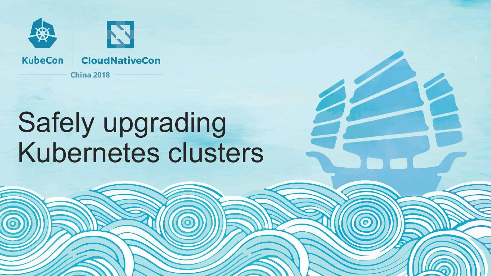
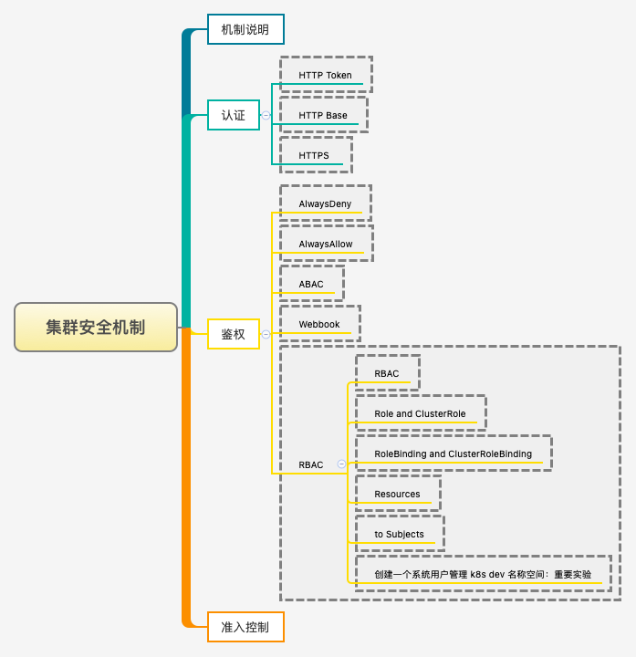
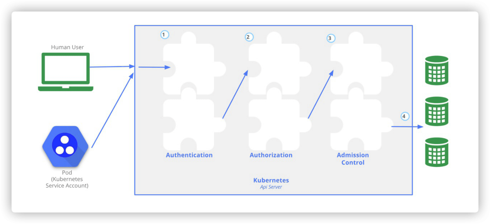
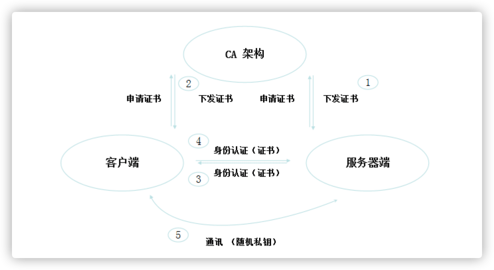
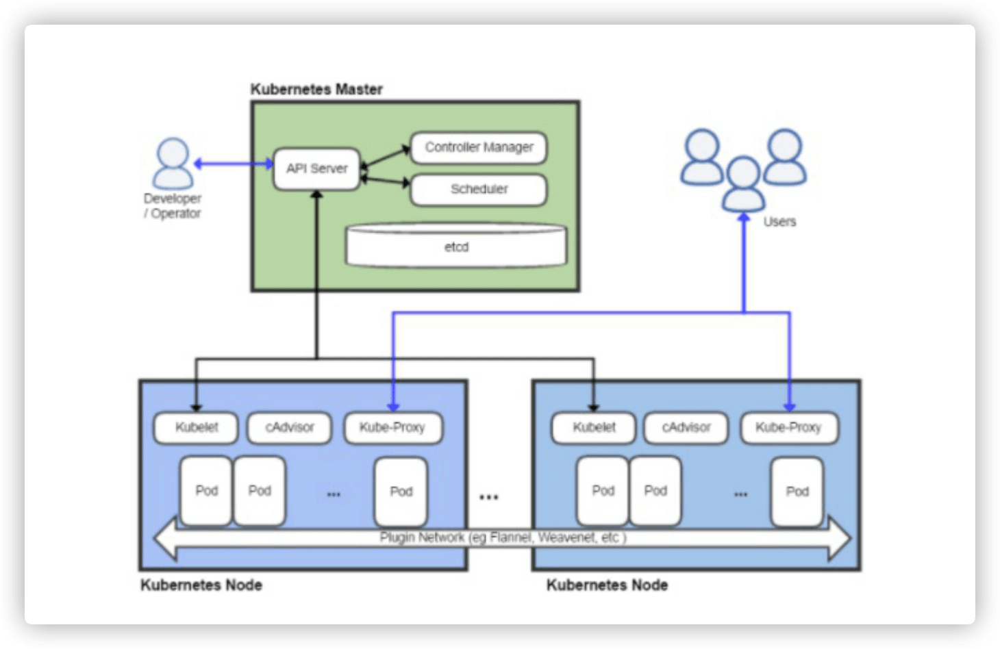
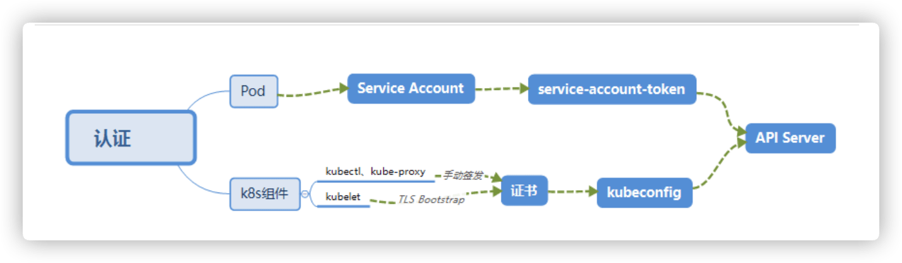
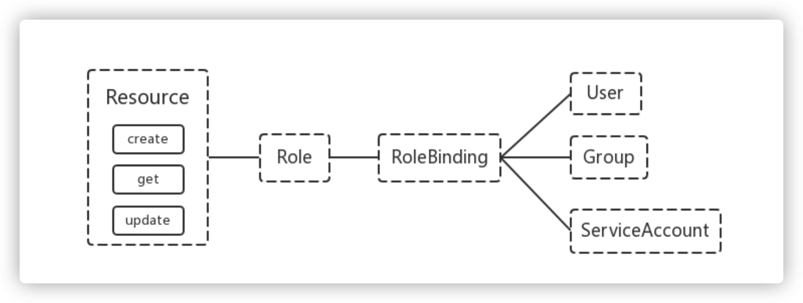

我们一起学习 Kubernetes 的集群安全机制吧！

1. 要点汇总
汇总这一节主要需要明白和理解的知识点！

2. 机制说明
Kubernetes 作为一个分布式集群的管理工具，保证集群的安全性是其一个重要的任务。API Server 是集群内部各个组件通信的中介，也是外部控制的入口。所以 Kubernetes 的安全机制基本就是围绕保护 API Server 来设计的。Kubernetes 使用了认证（Authentication）、鉴权（Authorization）、准入控制（Admission Control）三步来保证 API Server 的安全。

3. 认证过程
主要介绍服务之间认证的具体过程和重点知识！
- HTTP Token 认证：通过一个 Token 来识别合法用户
HTTP Token 的认证是用一个很长的特殊编码方式的并且难以被模仿的字符串 - Token 来表达客户的一种方式。Token 是一个很长的很复杂的字符串，每一个 Token 对应一个用户名存储在 API Server 能访问的文件中。当客户端发起 API 调用请求时，需要在 HTTP Header 里放入 Token。
- HTTP Base 认证：通过 用户名+密码 的方式认证
用户名+:+密码用 BASE64 算法进行编码后的字符串放在 HTTP Request 中的 Heather Authorization 域里发送给服务端，服务端收到后进行编码，获取用户名及密码。
- 最严格的 HTTPS 证书认证：基于 CA 根证书签名的客户端身份认证方式
- [1] HTTPS 证书认证

[2] 需要认证的节点
两种类型
Kubernetes组件对API Server的访问：kubectl、Controller Manager、Scheduler、kubelet、kube-proxy`Kubernetes管理的Pod对容器的访问：Pod（Dashborad也是以Pod形式运行
安全性说明
Controller Manager、Scheduler与API Server在同一台机器，所以直接使用API Server的非安全端口访问，--insecure-bind-address=127.0.0.1kubectl、kubelet、kube-proxy访问API Server就都需要证书进行HTTPS双向认证
证书颁发
- 手动签发：通过
k8s集群的跟ca进行签发HTTPS证书 - 自动签发：
kubelet首次访问API Server时，使用token做认证，通过后Controller Manager会为kubelet生成一个证书，以后的访问都是用证书做认证了
- 手动签发：通过

- [3] kubeconfig
kubeconfig 文件包含集群参数（CA 证书、API Server 地址），客户端参数（上面生成的证书和私钥），集群 context 信息（集群名称、用户名）。Kubenetes 组件通过启动时指定不同的 kubeconfig 文件可以切换到不同的集群。
我们可以简单理解为，kubeconfig 文件就是一个认证函，其中包含了访问服务的信息以及用于认证的信息。默认会在家目录下创建一个隐藏的 .kube/config 目录，对应 kubeconfig 文件就在这里保存着。
apiVersion: v1
kind: Config # 类型
clusters:
- cluster:
certificate-authority-data: LSxxQo= # 集群认证信息
server: https://192.168.66.10:6443 # 服务器地址信息
name: kubernetes
contexts:
- context:
cluster: kubernetes
user: kubernetes-admin
name: kubernetes-admin@kubernetes
current-context: kubernetes-admin@kubernetes # 当前的集群
preferences: {}
users:
- name: kubernetes-admin # 当前的用户名
user:
client-certificate-data: LSxxQo= # 客户端证书
client-key-data: LSxxQo= # 客户端私钥
- [4] ServiceAccount
Pod 中的容器访问 API Server。因为 Pod 的创建、销毁是动态的，所以要为它手动生成证书就不可行了。Kubenetes 使用了 Service Account 解决 Pod 访问 API Server 的认证问题。
- [5] Secret 与 SA 的关系
Kubernetes 设计了一种资源对象叫做 Secret，分为两类，一种是用于 ServiceAccount 的 service-account-token，另一种是用于保存用户自定义保密信息的 Opaque。ServiceAccount 中用到包含三个部分：Token、ca.crt、namespace。默认情况下，每个 namespace 都会有一个 ServiceAccount，如果 Pod 在创建时没有指定 ServiceAccount，就会使用 Pod 所属的 namespace 的 ServiceAccount。
token是使用API Server私钥签名的JWT。用于访问API Server时，Server端认证。ca.crt根证书。用于Client端验证API Server发送的证书。namespace标识这个service-account-token的作用域名空间。
# /run/secrests/kubenetes.io/serviceaccount
$ kubectl get secret --all-namespaces
$ kubectl describe secret default-token-5gm9r --namespace=kube-system
- 总结

4. RBAC
上面认证过程，只是确认通信的双方都确认了对方是可信的，可以相互通信。而鉴权是确定请求方有哪些资源的权限。API Server 目前支持以下几种授权策略。通过 API Server 的启动参数 --authorization-mode 设置。
AlwaysDeny- 表示拒绝所有的请求，一般用于测试。
AlwaysAllow- 允许接收所有请求，如果集群不需要授权流程，则可以采用该策略。
ABAC（Attribute-Based Access Control）- 基于属性的访问控制，表示使用用户配置的授权规则对用户请求进行匹配和控制(已废弃)。
Webbook- 通过调用外部
REST服务对用户进行授权。
- 通过调用外部
RBAC（Role-Based Access Control）- 基于角色的访问控制，现行默认规则(通常策略)。
4.1 RBAC 授权模式
RBAC（Role-Based Access Control）基于角色的访问控制，在 Kubernetes 1.5 中引入，现行版本成为默认标准。相对其它访问控制方式，拥有以下优势：
- 对集群中的资源和非资源均拥有完整的覆盖
- 可以在运行时进行调整，无需重启
API Server服务 - 整个
RBAC完全由几个API对象完成，同其它API对象一样，可以用kubectl或API进行操作
RBAC 引入了 4 个新的顶级资源对象：Role、ClusterRole、RoleBinding、ClusterRoleBinding，4 种对象类型均可以通过 kubectl 与 API 操作。

需要注意的是 Kubernetes 并不会提供用户管理，那么 User、Group、ServiceAccount 指定的用户又是从哪里来的呢？Kubernetes 组件（kubectl、kube-proxy）或是其他自定义的用户在向 CA 申请证书时，需要提供一个证书请求文件。
而在这个文件中就定义了对应的用户和组，CN 定义用户，name.O 定义了组。当 K8S 读取证书信息的时候，会自动把这个两个信息提取出来，当做用户名和组。
{
"CN": "admin",
"hosts": [],
"key": {
"algo": "rsa",
"size": 2048
},
"names": [
{
"C": "CN",
"ST": "HangZhou",
"L": "XS",
"O": "system:masters",
"OU": "System"
}
]
}
API Server 会把客户端证书的 CN 字段作为 User，把 names.O 字段作为 Group。kubelet 使用 TLS Bootstaping 认证时，API Server 可以使用 Bootstrap Tokens 或者 Token authentication file 验证 =token，无论哪一种，Kubernetes 都会为 token 绑定一个默认的 User 和 Group Pod 使用 ServiceAccount 认证时，service-account-token 中的 JWT 会保存 User 信息有了用户信息，再创建一对角色/角色绑定(集群角色/集群角色绑定)资源对象，就可以完成权限绑定了。
4.2 Role and ClusterRole
在 RBAC API 中，Role 表示一组规则权限，权限只会增加(累加权限)，不存在一个资源一开始就有很多权限而通过 RBAC 对其进行减少的操作；Role 可以定义在一个 namespace 中，如果想要跨 namespace 则可以创建 ClusterRole，在创建 ClusterRole 的过程中不需要我们指定名称空间。
apiVersion: rbac.authorization.k8s.io/v1beta1
kind: Role
metadata:
name: pod-reader # 指定用户名称
namespace: default # 指定组名称
rules:
# 指定pod-reader使用apiGroups组和版本
- apiGroups: [""] # 省略为空的话则是coreAPI的核心组
resources: ["pods"] # 制定资源对象
verbs: ["get", "watch", "list"] # 设置对应的权限
ClusterRole 具有与 Role 相同的权限角色控制能力，不同的是 ClusterRole 是集群级别的，ClusterRole 可以用于:
- 集群级别的资源控制(例如
node访问权限) - 非资源型
endpoints(例如/healthz访问) - 所有命名空间资源控制(例如
pods)
apiVersion: rbac.authorization.k8s.io/v1beta1
kind: ClusterRole
metadata:
name: secret-reader
rules:
- apiGroups: [""]
resources: ["secrets"]
verbs: ["get", "watch", "list"]
4.3 RoleBinding and ClusterRoleBinding
RoloBinding 可以将角色中定义的权限授予用户或用户组，RoleBinding 包含一组权限列表(subjects)，权限列表中包含有不同形式的待授予权限资源类型(users, groups, or service accounts)；RoloBinding 同样包含对被 Bind 的 Role 引用；RoleBinding 适用于某个命名空间内授权，而 ClusterRoleBinding 适用于集群范围内的授权。将 default 命名空间的 pod-reader Role 授予 jane 用户，此后 jane 用户在 default 命名空间中将具有 pod-reader 的权限。
apiVersion: rbac.authorization.k8s.io/v1beta1
kind: RoleBinding
metadata:
name: read-pods
namespace: default
subjects:
- kind: User
name: jane
apiGroup: rbac.authorization.k8s.io
roleRef:
kind: Role
name: pod-reader
apiGroup: rbac.authorization.k8s.io
RoleBinding 同样可以引用 ClusterRole 来对当前 namespace 内用户、用户组或 ServiceAccount 进行授权，这种操作允许集群管理员在整个集群内定义一些通用的 ClusterRole，然后在不同的 namespace 中使用 RoleBinding 来引用。
例如，以下 RoleBinding 引用了一个 ClusterRole，这个 ClusterRole 具有整个集群内对 secrets 的访问权限；但是其授权用户 dave 只 2 能访问 development 空间中的 secrets(因为 RoleBinding 定义在 development 命名空间)。
apiVersion: rbac.authorization.k8s.io/v1beta1
kind: RoleBinding
metadata:
name: read-secrets
namespace: development
subjects:
- kind: User
name: dave
apiGroup: rbac.authorization.k8s.io
roleRef:
kind: ClusterRole
name: secret-reader
apiGroup: rbac.authorization.k8s.io
使用 ClusterRoleBinding 可以对整个集群中的所有命名空间资源权限进行授权；以下 ClusterRoleBinding 样例展示了授权 manager 组内所有用户在全部命名空间中对 secrets 进行访问。
apiVersion: rbac.authorization.k8s.io/v1beta1
kind: ClusterRoleBinding
metadata:
name: read-secrets-global
subjects:
- kind: Group
name: manager
apiGroup: rbac.authorization.k8s.io
roleRef:
kind: ClusterRole
name: secret-reader
apiGroup: rbac.authorization.k8s.io
4.4 Resources
Kubernetes 集群内一些资源一般以其名称字符串来表示，这些字符串一般会在 API 的 URL 地址中出现；同时某些资源也会包含子资源，例如 logs 资源就属于 pods 的子资源，API 中 URL 样例如下。
GET /api/v1/namespaces/{namespace}/pods/{name}/log
如果要在 RBAC 授权模型中控制这些子资源的访问权限，可以通过 / 分隔符来实现，以下是一个定义 pods 资资源 logs 访问权限的 Role 定义样例。
apiVersion: rbac.authorization.k8s.io/v1beta
kind: Role
metadata:
name: pod-and-pod-logs-reader
namespace: default
rules:
- apiGroups: [""]
resources: ["pods", pods/log"]
verbs: ["get", "list"]
4.5 to Subjects
RoleBinding 和 ClusterRoleBinding 可以将 Role 绑定到 Subjects；Subjects 可以是 groups、users 或者 service accounts。
Subjects 中 Users 使用字符串表示，它可以是一个普通的名字字符串，如 “alice”；也可以是 email 格式的邮箱地址，如 “escape@163.com”；甚至是一组字符串形式的数字 ID。但是 Users 的前缀 system: 是系统保留的，集群管理员应该确保普通用户不会使用这个前缀格式。Groups 书写格式与 Users 相同，都为一个字符串，并且没有特定的格式要求；同样 system: 前缀为系统保留。
4.6 实践演示
实践：创建一个用户只能管理 dev 空间
- [1] 创建
devuser用户k8s默认不会帮助我们创建用户(手动执行)- 下述所有操作均在
devuser用户下面
$ sudo useradd devuser
$ sudo passwd devuser
- [2] 创建
devuser的证书请求文件- 用户名称:
devuser；组:k8s
- 用户名称:
# devuser-csr.json
{
"CN": "devuser", # 用户名称
"hosts": [], # 表明可以使用的主机；默认为空表示所有主机
"key": {
"algo": "rsa", # 加密类型
"size": 2048 # 加密长度
},
"names": [
{
"C": "CN",
"ST": "BeiJing",
"L": "BeiJing",
"O": "k8s", # 组
"OU": "System"
}
]
}
- [3] 生成
devuser的证书请求相关文件
# 下载证书生成工具
$ wget https://pkg.cfssl.org/R1.2/cfssl_linux-amd
$ mv cfssl_linux-amd64 /usr/local/bin/cfssl
$ wget https://pkg.cfssl.org/R1.2/cfssljson_linux-amd
$ mv cfssljson_linux-amd64 /usr/local/bin/cfssljson
$ wget https://pkg.cfssl.org/R1.2/cfssl-certinfo_linux-amd
$ mv cfssl-certinfo_linux-amd64 /usr/local/bin/cfssl-certinfo
# 创建请求证书
# 会自动生成devuser.csr(证书请求)和devuser-key.pem(证书私钥)文件
$ cd /etc/kubernetes/pki
$ cfssl gencert -ca=ca.crt -ca-key=ca.key -profile=kubernetes \
/root/devuser-csr.json | cfssljson -bare devuser
- [4] 设置集群参数生成
kubeconfig文件
# 设置集群参数生成kubeconfig文件(devuser.kubeconfig)
# set-cluster: 设置集群名称
# certificate-authority: 指定请求
$ cd /home/devuser
$ export KUBE_APISERVER="https://192.168.66.10:6443"
$ kubectl config set-cluster kubernetes \
--certificate-authority=/etc/kubernetes/pki/ca.crt \
--embed-certs=true \
--server=${KUBE_APISERVER} \
--kubeconfig=devuser.kubeconfig
- [5] 设置客户端认证/上下文参数
# 设置客户端认证
$ kubectl config set-credentials devuser \
--client-certificate=/etc/kubernetes/pki/devuser.pem \
--client-key=/etc/kubernetes/pki/devuser-key.pem \
--embed-certs=true \
--kubeconfig=devuser.kubeconfig
# 设置上下文参数
$ kubectl config set-context kubernetes \
--cluster=kubernetes \ # 集群名称
--user=devuser \ # 用户名
--namespace=dev \ # 名称空间
--kubeconfig=devuser.kubeconfig
# 设置默认上下文
$ kubectl create rolebinding devuser-admin-binding \
--clusterrole=admin --user=devuser --namespace=dev
$ kubectl config use-context kubernetes --kubeconfig=devuser.kubeconfig
$ cp -f ./devuser.kubeconfig /root/.kube/config
5. 准入控制
准入控制是 API Server 的插件集合，通过添加不同的插件，实现额外的准入控制规则。甚至于 API Server 的一些主要的功能都需要通过 Admission Controllers 实现，比如 ServiceAccount。官方文档上有一份针对不同版本的准入控制器推荐列表，其中最新的 1.14 的推荐列表是：
NamespaceLifecycle,LimitRanger,ServiceAccountDefaultTolerationSeconds,Mutat ingAdmissionWebhookValidatingAdmissionWebhook,ResourceQuota,DefaultStorageClass
列举几个插件的功能：
NamespaceLifecycle- 防止在不存在的
namespace上创建对象，防止删除系统预置namespace删除。
- 防止在不存在的
namespace- 连带删除它的所有资源对象。
LimitRanger- 确保请求的资源不会超过资源所在
Namespace的LimitRange的限制。
- 确保请求的资源不会超过资源所在
ServiceAccount- 实现了自动化添加
ServiceAccount。
- 实现了自动化添加
ResourceQuota- 确保请求的资源不会超过资源的
ResourceQuota限制。
- 确保请求的资源不会超过资源的